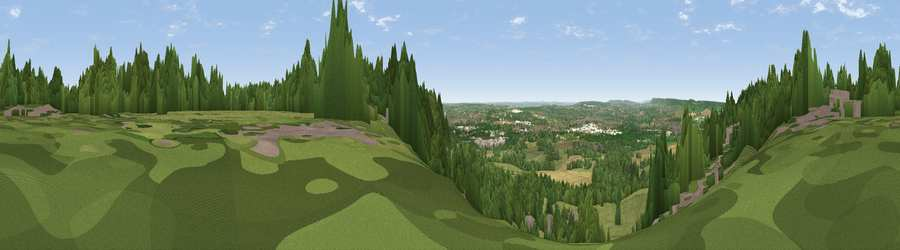

Viewpoint near Bluebell Hill
#9874 in England · top 3% of its area beats it · near Bluebell HillThe view, rendered

A 360° render of this exact spot computed from the terrain model, tree cover and land cover — summer colours, afternoon light, calibrated against photographs of famous viewpoints. Real trees, hedges and buildings will differ in detail.
The panorama
Grey silhouette: terrain skyline in each direction (720 bearings, Earth curvature and refraction included). Dashed green: skyline with trees (+15 m) and buildings (+8 m) as obstacles. Blue strip: how far the ground is visible on each bearing.
Where the view opens
Wedge length = distance to the farthest visible ground on that bearing (vegetation-aware). Rings at 10, 25 and 50 km.
What fills the view
50% woodland · 29% grassland · 11% cropland · 9% built-up · 1% water
Angular shares of the visible panorama (visual magnitude), not map area. Landscape diversity 0.53 (0–1 Shannon).
Key numbers
More beautiful places nearby
The staircase of upgrades: each row has a higher view potential than everything closer. Driving times are estimates from straight-line distance, calibrated against real road routing — check an actual route before setting out.
| Place | Direction | Drive | Score |
|---|---|---|---|
| Bluebell Hill | WNW · 1 km | ~2 min | 64.8 |
| Viewpoint near Boxley | SE · 3 km | ~6 min | 68.6 |
| Viewpoint near Shipbourne | WSW · 20 km | ~34 min | 69.1 |
| Viewpoint near Westwell | ESE · 27 km | ~43 min | 72.2 |
| Viewpoint near Lympne | SE · 44 km | ~64 min | 72.6 |
| Tolsford Hill | ESE · 47 km | ~68 min | 77.9 |
| Viewpoint near Fairlight | S · 52 km | ~73 min | 79.0 |
| Viewpoint near Capel-le-Ferne | ESE · 55 km | ~76 min | 80.2 |
51.32911, 0.50725 · source: screening · position refined by local search. Computed location — check access rights before visiting.